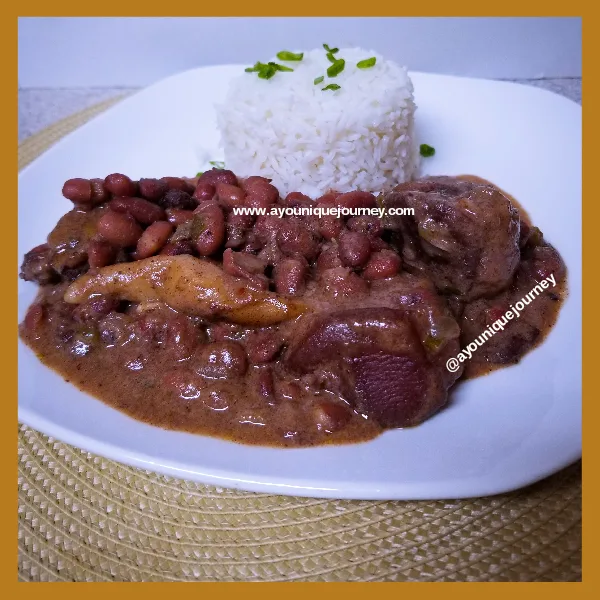

Stew Peas

Description
When you talk about Jamaican home cooking then this is one of the
first dishes that should cross your mind. Whether you like it the
traditional way, meaning the protein used is pig's tail or you have a
preference for salted beef, it really doesn't matter. When I think of a
meal that I want prepped at home this is it
Ingredients
- pig's tail
- flour
- salt
- onion
- green onion
- garlic
- thyme
- thyme
- rice
- coconut milk
- red peas
Steps
- chop pig's tail into small chunks
- scald pig's tail in a pot of boiling water
- after scalding for 20 minutes remove from boil
- heat 6 table spoons of cooking oil in pressure pot
- add scalded pig's tail
- add enough fresh water to cover pig's tail
- toss in red peas
- add garlic
- allow to pressure for 15 minutes
- in another container add 1 cup flour and 1 tea spoon of salt
- add water little by little to flour to form dough
- once dough is formed break of little bits and roll in palms
- after the 20 mins of pressuring add the rolled dough to pot
- now add the thyme and the green onion
- add the coconut milk
- in a separate pot add 2 cups of water and a bit of salt
- heat to boil and then add a cup of rice
- cook till rice is fluffy and cooked through
- as for the pig's tail do not pressure just cover on low flame
- cook until red peas are soft